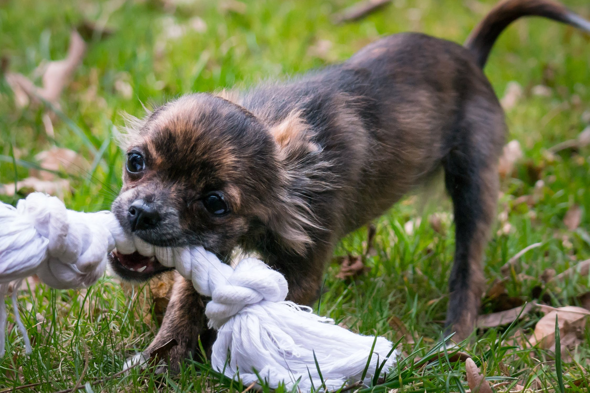

Caring for Dogs

Dogs need a premium food for energy and health. The PAWS Pet Adoption centre recommends a quality dry biscuit. Biscuits might help to keep your dog’s teeth healthy and are more
nutrient-dense than soft foods.
- Cat food is not suitable for dogs.
- Human food has salt, sugar, or additives that can be harmful, fattening or cause severe reactions.
- Cooked bones can splinter and get stuck in the throat or gut. Only provide uncooked bones (e.g. lamb brisket, chicken carcass) and always supervise when eating.
- Do not give your dog milk as most are lactose intolerant and will get diarrhoea?.